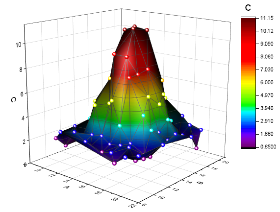

3Dグラフの基本
3D-Plotting-Basic
サマリー
Originで等高線図や、カラーマップ曲面図等の3Dグラフを作成する場合、XYZデータから直接作図することができます。
より滑らかな3D曲面図を作成したい場合は、Originのグリッディング機能を使用し、XYZデータを行列に変換してから作図することをおすすめします。
必要なOriginのバージョン: Origin 9.0 SR1以降
学習する項目
このチュートリアルでは、以下の項目について解説します。
- XYZデータから3Dグラフを作成する
- 「レイヤ内容」ダイアログを使ってデータを追加/削除する方法
- XYZデータを行列に変換する方法
- 「作図の詳細」ダイアログを使って、グラフを編集する
3D曲面図、散布図を作成
- 「データ：ファイルに接続：Text/CSV」を選択し、Originのプログラムフォルダにある、Samples\Matrix
Conversion and Gridding\XYZ Random Gaussian.datをインポートします。
- C列を選択し、表示されるミニツールバーのZボタン
 をクリックします。
をクリックします。
- 「作図」メニューの3D：3Dカラーマップ曲面を選択し、作図します（Graph1）。

- グラフの左上にある、レイヤ1アイコンを右クリックして、レイヤの内容を選択してダイアログを開きます。このダイアログでは、
 ボタンをクリックして開くメニューから、3D散布図/トランジェクトリ/ベクトルを選択します。
ボタンをクリックして開くメニューから、3D散布図/トランジェクトリ/ベクトルを選択します。
- 左パネルでC列を選択してプロットの追加ボタンをクリックし、3D散布図をグラフに追加します。OKをクリックしてダイアログを閉じます。
- Graph1の散布図上でダブルクリックし、作図の詳細ダイアログを開きます。シンボル タブにおいて、
形状を 球、 サイズを12、そして色 をマップ: Col(C)(下のように矢印マークから色選択を展開してポイント毎タブ
にて設定します)。
- ドロップラインタブでZ軸に平行のチェックを外します。
- カラーマップタブで、色塗りヘッダをクリックし、「塗り方」ダイアログを開きます。塗り方ダイアログで、パレットをロードを選択し、パレット選択ボタンをクリックしてリストからRainbowを選択し、OKボタンをクリックします。
- 作図の詳細ダイアログの左パネルで、Layer1を選択します。ライティング タブにおいて、モードで平行光源
を選択し、光の色にて下図のように設定します。OKをクリックして、ダイアログを閉じます。
グラフは次のようになります：

 |
3D openGLグラフ上でSキーを押します。マウスカーソルの形状が変わります。マウスカーソルまたは方向キーで光源の方向を変更します。
|
3D曲面図をスムージング
上記の3D曲面図（XYZデータから作成されたもの)よりも滑らかな3D曲面図を作成したい場合は、まず XYZグリッディングツールを使用してXYZデータを行列に変換します。そして、その行列データを使用して3D曲面図を作成します。
- XYZ Random Gaussianワークシートをアクティブにします。
- メニューからワークシート：行列に変換：XYZグリッディングを選択してダイアログを開きます。グリッディング設定ブランチを展開し、
グリッディング手法とそのパラメータのドロップダウンリストからランダム (Thin Plate Spline)を選択します。
さらに 列と行 を 30にします。OKをクリックしてXYZデータを行列に変換します。

- この行列をアクティブにし、メインメニューから作図：3D：曲面：3Dカラーマップ曲面を選択し、Graph2を作成します。
- Go back to Graph1に戻り、レイヤ枠内の白いスペース上で右クリックして開くメニューからフォーマットのコピー：全てのスタイルフォーマットC
を選択します。
- Graph2をアクティブにしてレイヤ枠内で右クリックし、メニューからフォーマットの貼り付けを選択します。
- メニューからフォーマット：作図の詳細（プロット属性）を選択し、作図の詳細ダイアログボックスを開きます。カラーマップ/等高線タブを開き、等高線図を有効にするのチェックを外します。
Graph2 は次のようになります。